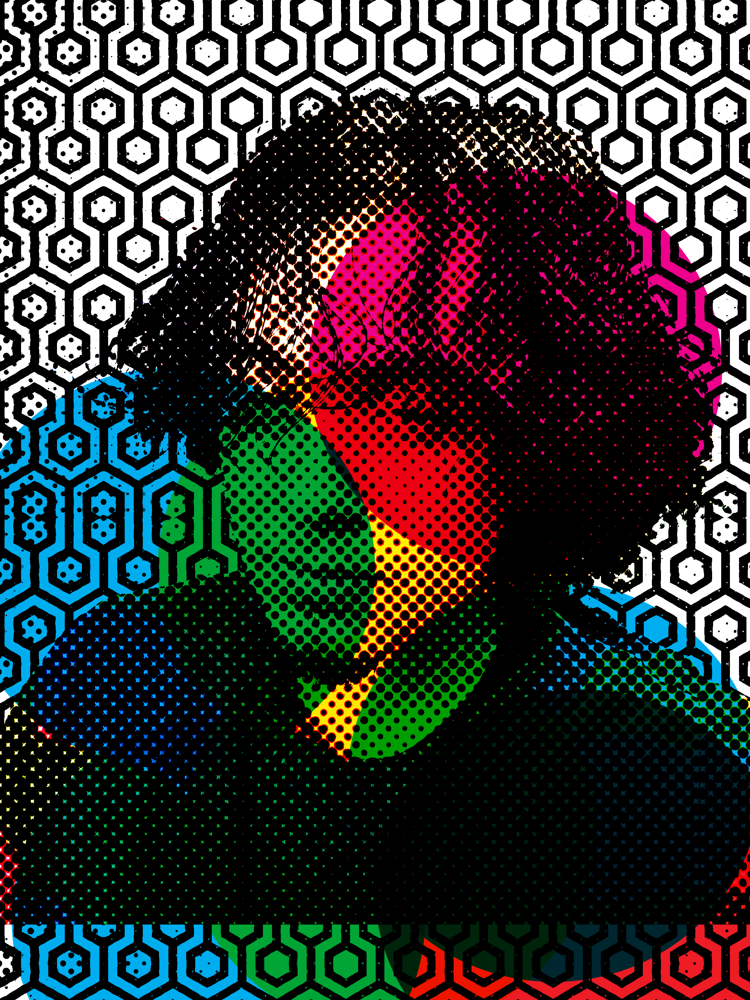
MARTIN LANUZA
( HE/HIM )
Instagram: @iconicallyironically
About the Artist
Martin Lanuza, a digital media artist, was born in a small town of Hollister, California. Ever since he was a young chap, he loved to draw away through the days to perfect his craft. Creating numerous drawings that would soon evolve to more sophisticated and intricate pieces that truly reflect his passion as an extension of his mind. Martin is no stranger to taking chances,taking unconventional means to craft something he may not have done before. Taking much enjoyment in learning new techniques and art approaches. Much like a master wields a sword, He harnesses the power of the arts to bring his imaginative visions to life in any shape or form he desires. He strives for his creations to outlast him, ensuring that a piece of his creativity endures long after he's gone.
ROOTS
My work exists at the intersection of personal memory and broader cultural behavior, particularly in how nostalgia functions in contemporary society. The title Roots reflects both grounding and entanglement. While roots can symbolize heritage, identity, and stability, they can also suggest stagnation and restriction. I am interested in how nostalgia, which often begins as a comforting connection to the past, can become distorted into something controlling. Culturally, we live in a time where media franchises, reboots, and revivals dominate popular entertainment. The past is constantly repackaged and resold to us, reinforcing emotional attachments that are difficult to let go of. Historically, nostalgia has always existed, but in the digital age it has become amplified. Streaming services, social media archives, and algorithm-driven content make it easy to continuously revisit the past rather than confront the present. Sociopolitically, this attachment can influence identity and even conflict. People often defend childhood films, games, or trends with intense loyalty, sometimes reacting aggressively when those properties are critiqued or altered. A visible example is the phenomenon of “Disney adults,” individuals who invest significant time and money attempting to recreate childhood feelings. Corporations recognize and capitalize on this emotional attachment, monetizing nostalgia until it becomes a cycle of consumption.
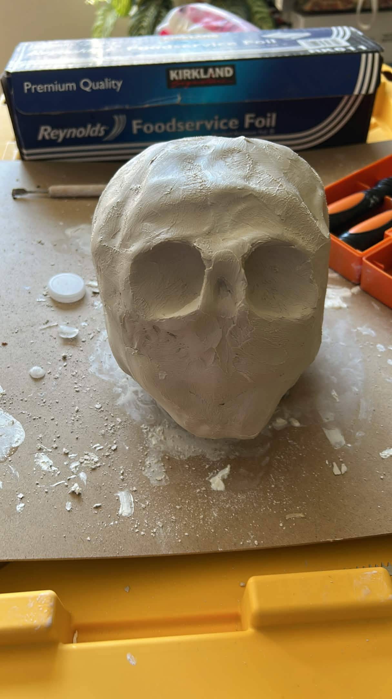
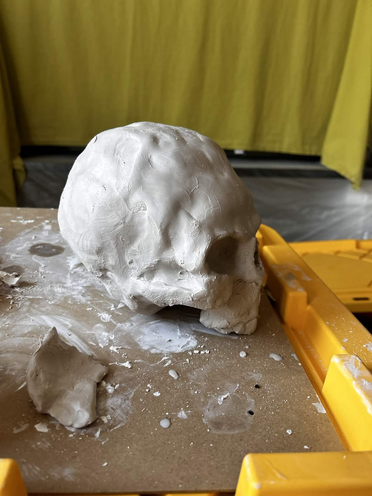
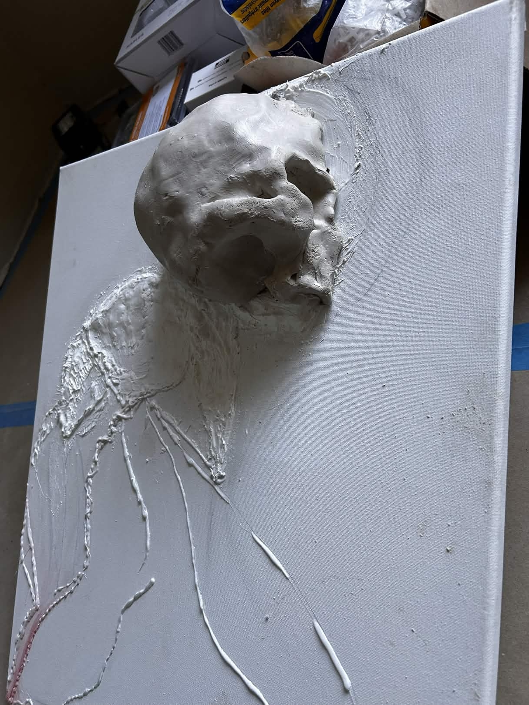
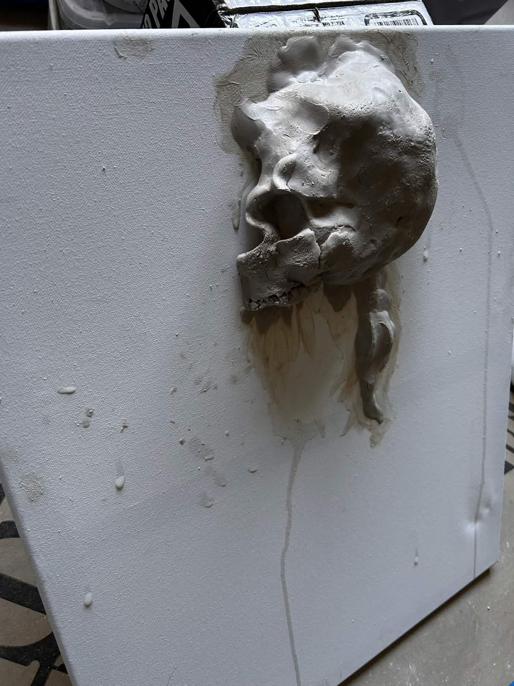
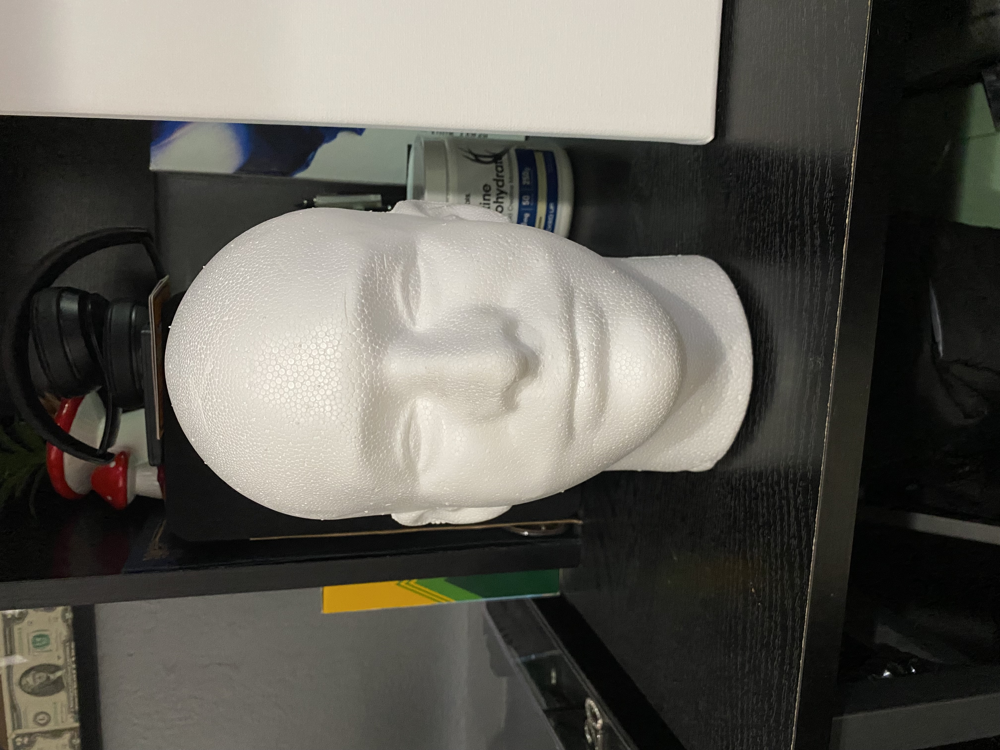
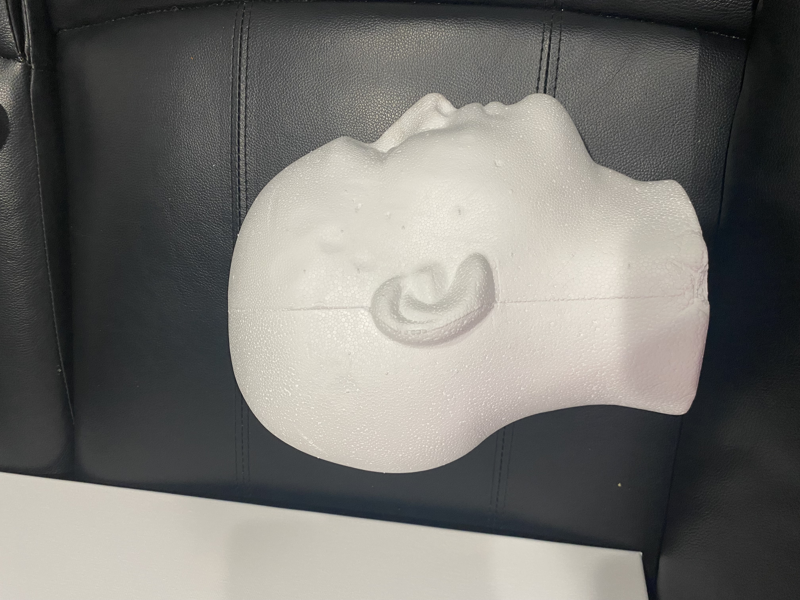
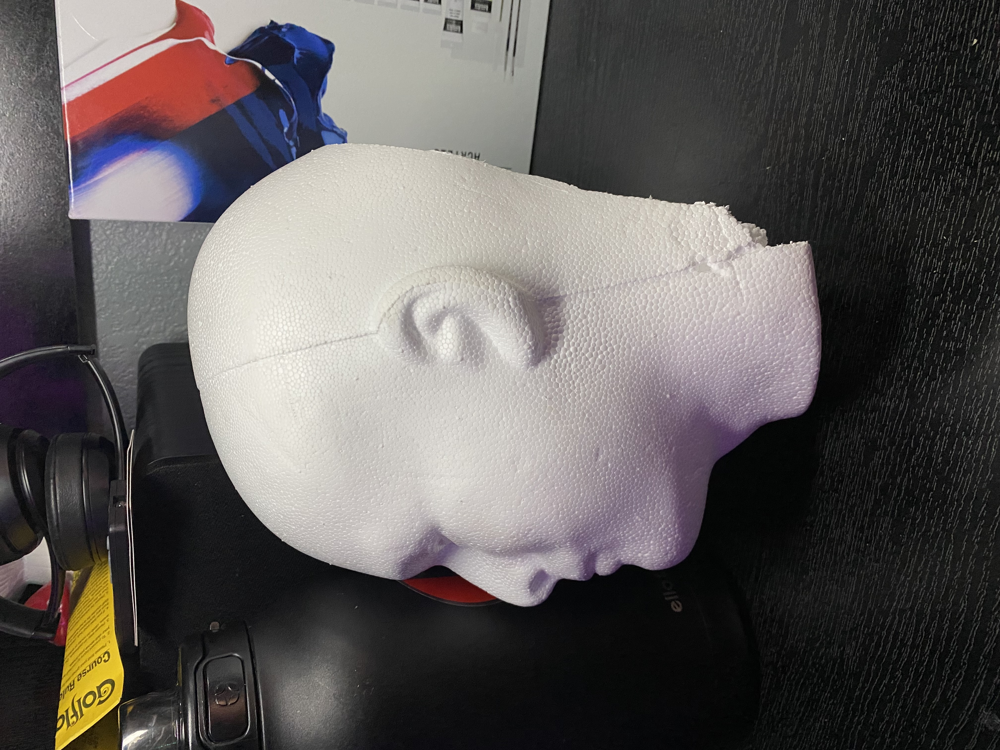
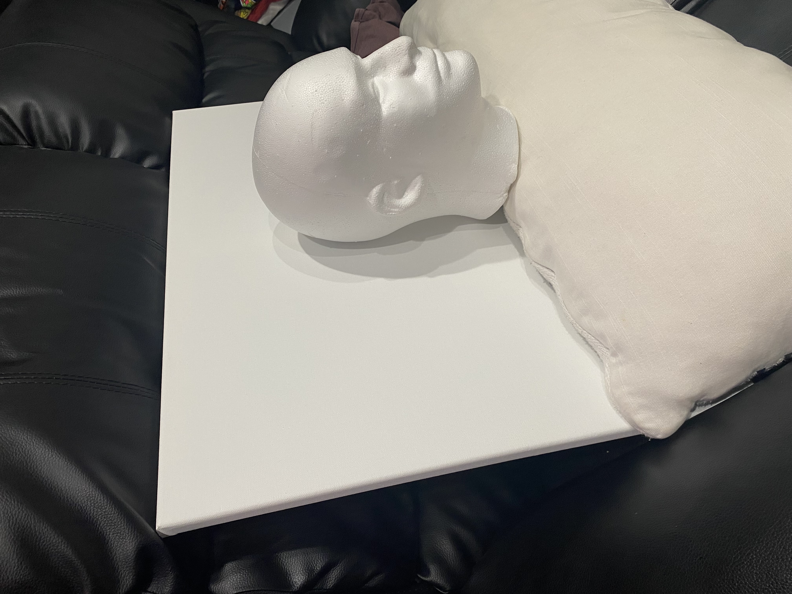
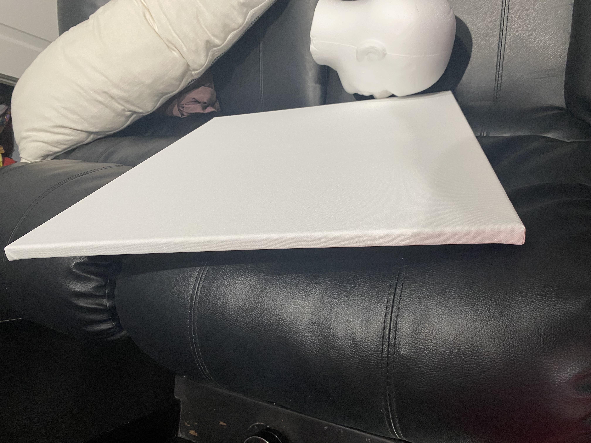
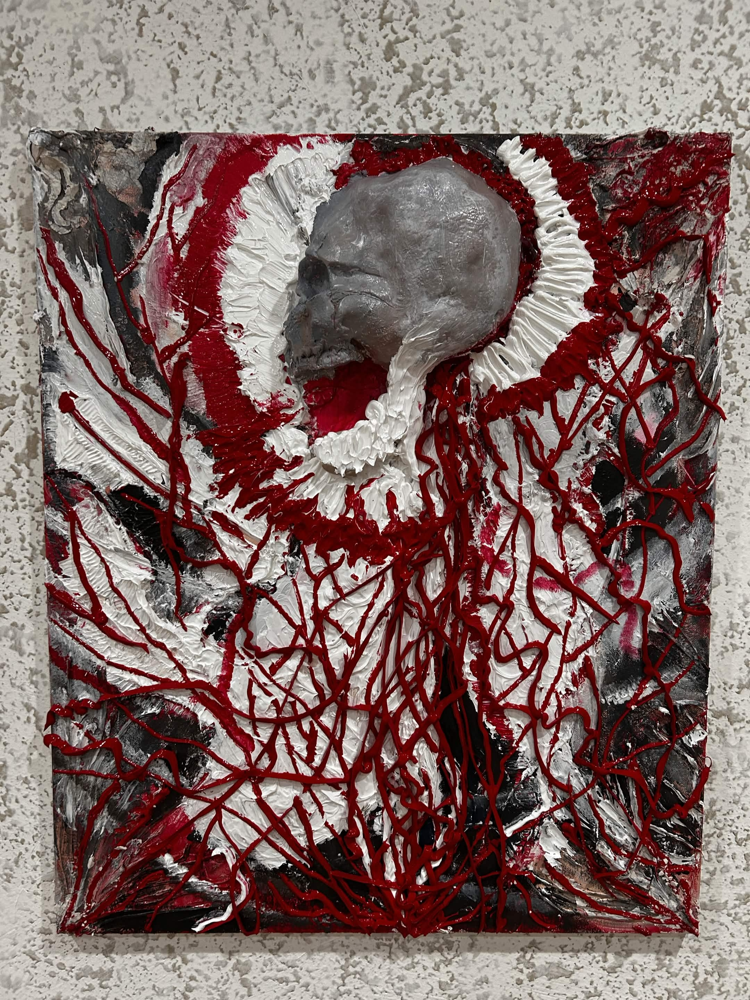